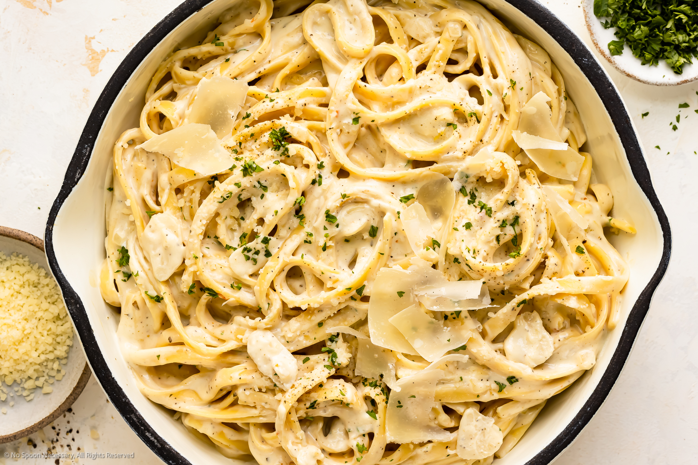

Cream Base Sauce

What is the beauty of cream sauce pastas?
This particular type of pasta's base is made up of dairy products and in so is rich and creamy... hence the name.
Ingredients
- Milk
- Salt
- pepper
- onion
- garlic
- flour
- butter
Cooking Directions
- Put butter into your fry pan
- Dice them onions and throw them in
- Let them become a golden brown
- Finely chop the garlic
- Trow dat shit in too
- when arromatic and not before burning, mix a couple pinches of flour and mix until you have a thick mess
- Now mix the milk in and simmer until thick add salt and pepper for taste